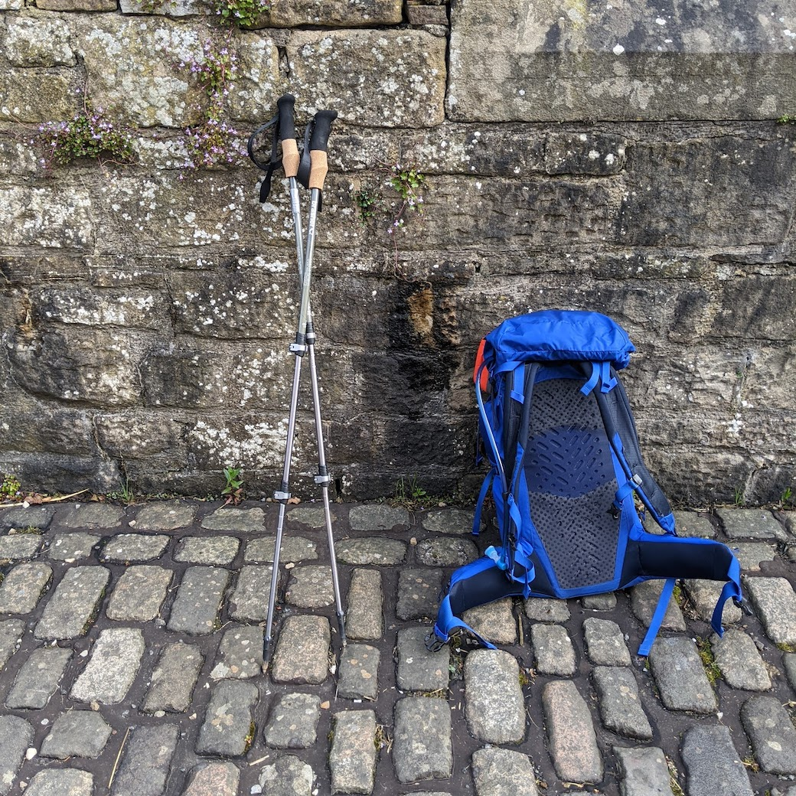
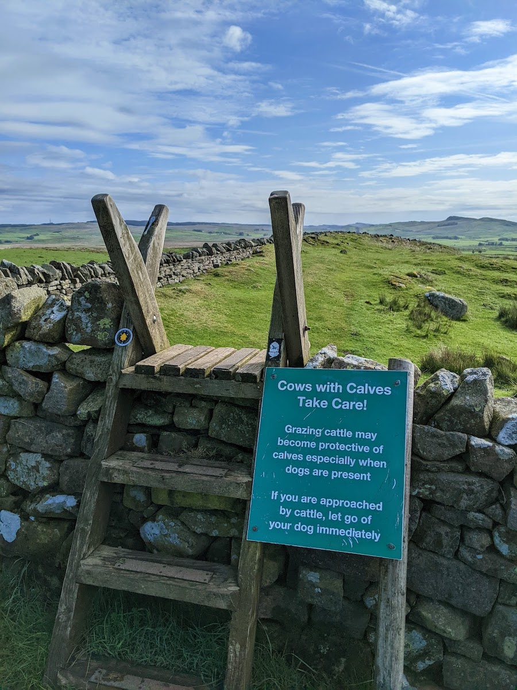
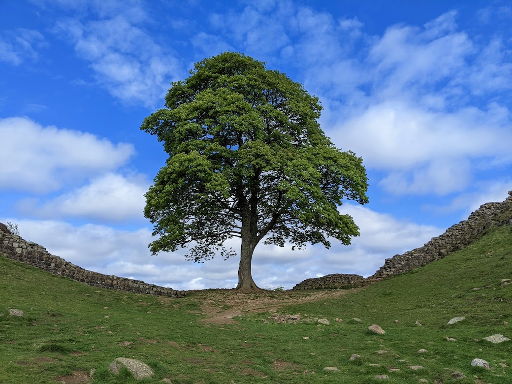
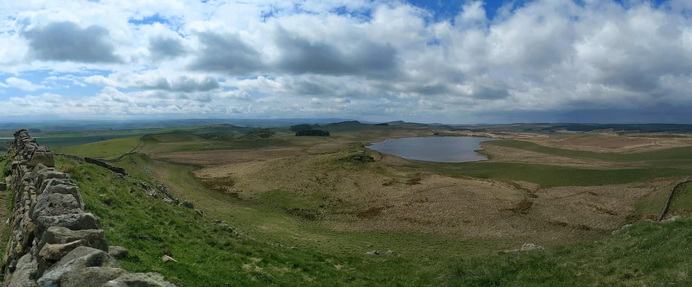
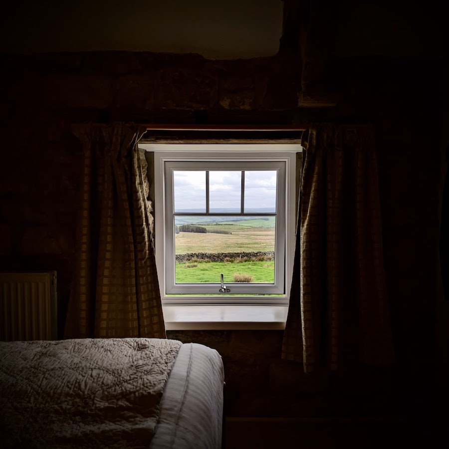

Photo: Sycamore Gap
Greenhead
I told everyone who asked that I slept well. It wasn’t really true; the room was well-heated and there’s nothing but a comforter, reinforcing the fact that I sleep best in the cold. On the flip side, it’s impossible to complain because thanks to the over-powered heaters, every scrap of clothing and shoe I have is completely dry.
No rain is forecast for today, my third walking Hadrian’s Wall Path. I should have fewer miles than yesterday, though up over steeper terrain. It’s a Saturday, and I’m heading into some of the most famous sections of the wall, so I don’t expect that I’ll be nearly as alone as I was in the hills between Carlisle and this river valley.
Strava begs to inform me that yesterday I continued my trend of sniping impossibly obscure records, landing the seventh fastest time on the one big hill climb of the day. I’ll bask in that for a little bit.

Thirlwall Castle
I detected the tiniest note of defensiveness in the language on the intepretive sign here. In this case it was “recycled” rather than stolen Roman stone and “meant as a defense against the Scots”, which of course the wall itself had not been doing 🙄. From what I’ve read, there’s more than a change in defensive strategies going on here, from a full frontier wall to individual keeps over hundreds of years. This particular castle tells the story of a 12th-century shift in political structure, with a Norman aristocracy afraid of its own people, and trying to keep them out as much as any invaders.
It’s fun to imagine this as a LEGO animation, with bricks being sucked away from the long wall and - with a satisfying clatter - forming this castle on a hill, then after some time sucked away again into individual houses and farm walls.
Walltown
Another contrast I’m trying to wrap my head around is the fact that here they say deliberately to walk on untrodden turf. On the Appalachian trail and its various derivatives, the ethic is always to walk in the muck or on rocks. It makes me wonder what sort of supernatural turf this is, that it can handle thousands of feet as long as they’re spread out. On reflection I realized that this is probably because Vermont’s Alpine vegetation is so dang sensitive to boots, and the winters there are so much harsher.
I’m in the high country now. Climbing around crags, and wondering why the Romans would even bother putting a wall at the top of some of these. They’re too steep to climb as it is.
The dew is still on the grass this morning, but I can see the path maybe already walked by others today snaking its way through the silvery-green pasture.
Haltwhistle
Doing a lot of wall jumping now. There are three-step ladders going up one side and back down the other. One fence after another runs perpendicular into the farm wall where the defensive wall once stood, and then sweeps down the hill to the valley in the south. Long sheep paddocks, with lots of dividers to cross.
As I walked through a farm just now, I noticed a calf laid out on its side next to a cow. It didn’t look like it was feeding; it didn’t look like it was moving. I wondered if it was dead. Then I saw it was breathing steadily, and I realized I don’t think I’ve ever seen a cow sleep like that before. That calf was knackered.

Caw Gap
And awkwardly running for a little bit there, to get ahead of at least a hundred day walkers who had just been disgorged from several tour buses. (I would later discover that this brought me another “seventh fastest in the world” record from Strava)
I’ve identified in myself an occasional but rather ugly resentment for other people who dare to hike on my trail. This seems almost like a class-based sentiment sometimes, particularly when I start thinking about the gear that others wear, or fail to bring. I’ll need to keep an eye out for that feeling, and suffocate it when it arises.
Sycamore Gap
I had about a 10-second window between groups of day walkers, but I did manage to get a photo of the famous tree with no one around it. I’m a bit unhappy that I was too early at Twice Brewed for a pint, but this section seems fraught with a combination of perfect vistas, historically fascinating locations, and hordes of people. I kept moving after I sent a message home.

North of Vindolanda
I’ve stopped for lunch now in a beautiful Grove of White pines, somewhat incongruously placed along the edge of the cliff above the lake. This stretch of the trail is a much more familiar kind to me, and it seems like a detour, because I hear voices nearby and see people walking in parallel through the pasture, but no one else is here. It’s a good place for a break, sitting on my pack, with my back against the wall, looking North, eating cheese and pepperoni on tortillas, listening to Miles Davis.
Housteds
I moved very quickly past the Roman Fort, as it seemed to be very crowded and represented the slightest of detours. I waved back from the outside of the fence area - from the north side actually, like a barbarian - at a kid with his family inside the fort. They seemed perplexed, but I don’t suppose I could blame them. There are many ways to arrive at and depart from a place like this.
I’m building a blister on the bottom of my right foot. The reason why this isn’t causing me to panic is the fact that the soles of my feet have very few nerve endings and I think I can probably get on. However, I just looked at tomorrow’s mileage, and if my vast underestimates hold, then it’ll be a 25-mile day. That has me a little worried.
The section of trail I just left was in the care of Heritage England. But not too long before that I had passed the Vindolanda private trust, and the Fort at Wallsend is a separate private trust. And I’m also not sure at all who’s in charge of the trail I’m walking on right now. It seems to me that there are historic preservation turf wars in England, and I’d love to read about them if anybody has an oral history.
By the sheer variety of different gate latches I’ve encountered, I have to assume that the sheep here are incredibly clever master escape artists. Some of these latches have taken me a minute to figure out, so I can only assume that Shaun is somewhere nearby, scheming.

Settlingstones
I think it’s probably not a hot day, but it sure feels exposed and raw. It’s entirely possible that I will have acquired that rarest of conditions - an English sunburn - by the end of the day. But the end of the day looks to be fairly close. I can see my bed and breakfast off in the distance, maybe a mile away.
Carraw
I’m too early! But it’s fine. I’m not going to screw around with the remainder of today; I’m going to rest. After I get to check in, that is. In the meantime, I’m hanging with the chickens in the garden.
[Later]
The innkeeper was apologetic that there was no dinner available, but she had a concert to attend in the evening: her daughter was singing in a choir at Hexham abbey. Her young son ran through the house kicking his soccer ball, and when I asked, he informed me that he was no Newcastle fan, but held with Blackburn.
Now checked in, my feet feel very grateful. I had enough pack food to make a dinner of it, and a cup of tea to go along. These hot showers at the ends of long days on the trail are an excellent reminder that I’m not so young anymore. I don’t think luxury becomes me generally, but I do think that this type of accommodation is a worlds-better way to rest while backpacking than rolling out a sleeping bag in a lean-to.
The old rhythms of unpacking and packing again are resurfacing. The simple, necessary tasks and the ones that quickly become unnecessary. I look forward to tomorrow morning, with tracks already laid. Fill water, pack clean clothes, brush teeth, move out. It gets easier with repetition, with only slight variation by location.
I slept hard.
